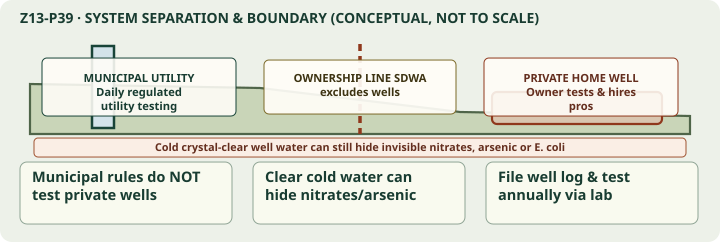

Z13-P39 · Home survival and utilities · New manuscript
Understand private well ownership responsibilities outside municipal oversight
Clarify why rural and acreage homeowners bear full legal and testing responsibility for domestic groundwater safety.
When it applies · Residences supplied by private drilled, driven-point, or dug wells across rural Minnesota and the Upper Midwest.
Equipment · Well construction record (depth, casing, aquifer), certified water-testing lab contacts, and licensed well-contractor contact.

Actions
- Recognize that federal Safe Drinking Water Act rules and municipal water utilities do NOT test, monitor, or regulate private household wells—homeowners are personally responsible for inspection, testing, and treatment.[U05]
- Keep your state well-construction log (in Minnesota, MDH Unique Well Number record) with your household utility binder so licensed contractors and emergency responders know well depth, casing seal, and pump type immediately.[U05, U06, U14]
- Never equate cold, crystal-clear, sweet-tasting well water with biological or chemical safety—nitrates, arsenic, lead, agricultural chemicals, and coliform bacteria are completely invisible and tasteless.[U05, W22, W23]
Failure recognition · Living on a rural private well for twenty years without a single lab test because the water looks sparkling clear and tastes cold.[U05, W23]
Verify · Confirm well-construction record is filed in the home binder and scheduled annual certified-lab testing is active.[U05, U14]
Stop or change course · Sudden taste, odor, turbidity change, nearby septic failure, or floodwater contact requires switching immediately to safe bottled water and testing.[U05, W18]
Evidence and editorial notes
- U05 · US EPA · Private Drinking Water Wells (current web edition)
- Section: Private Drinking Water Wells > Maintenance, Floods, and Testing · Conditions: Households relying on private domestic groundwater wells
Support: Private wells are not regulated by municipal utilities; test water annually (and after any flood, power loss with pressure drop, or plumbing repair) through a certified laboratory and keep wellheads sealed above grade away from runoff and chemicals.
Limitations: Visual clarity or normal taste never proves a private well is free of bacteria, nitrates, or arsenic. · Conflicting evidence: None; aligns with CDC-WELL (W18) and MDH-WELL-HOME.
Editorial note: Core private-well governance and testing cadence in Z13. · Specialist reviewer: Hydrogeology, licensed well contractor, and public health
Primary source · checked 2026-11-24 - U06 · Minnesota Dept. of Health · Wells and Borings Safety (current web edition)
- Section: Wells and Borings > Minnesota Private Well Standards and Disinfection · Conditions: Minnesota and Upper Midwest private residential wells
Support: Use a licensed Minnesota well contractor for wellhead repair, electrical pump work, or shock disinfection after flooding or backflow; maintain sanitary well caps and isolate well casings from surface snowmelt and agricultural runoff.
Limitations: DIY well-cap removal or improper chlorine mixing risks aquifer contamination and electrical shock. · Conflicting evidence: None; regionalizes EPA-WELL for Minnesota conditions.
Editorial note: Anchors Upper Midwest private-well resilience and licensed-trade handoff. · Specialist reviewer: Minnesota environmental health and licensed well trades
Primary source · checked 2026-11-24 - U14 · FEMA / Ready.gov · Make a Plan (current web edition)
- Section: Household Emergency Planning, Utility Maps, and Outage Checklists · Conditions: Pre-outage residential documentation and household drills
Support: Document main water, electrical panel, and gas shutoff locations, utility outage phone numbers, medical power registries, and neighborhood check-in networks on paper before storms hit.
Limitations: Utility medical-priority lists do not guarantee uninterrupted power during major ice storms or grid blackouts. · Conflicting evidence: None; bridges Z01 planning with Z13 household infrastructure.
Editorial note: Grounds household utility mapping and vulnerable-occupant contingencies. · Specialist reviewer: Emergency management and accessibility specialist
Primary source · checked 2026-11-24 - W18 · CDC · What to Do With Your Private Well After a Flood (current web edition)
- Section: How to Disinfect Wells After an Emergency > Safety precautions and before returning to use · Conditions: Private drinking water wells submerged or impacted by floodwater
Support: Do not drink flood-impacted well water; rely on bottled or verified safe water, watch for fuel/chemical spills, and use qualified well contractors for inspection, electrical safety, and disinfection.
Limitations: Well shock-chlorination is unsafe to improvise around damaged electrical equipment or chemical releases. · Conflicting evidence: None; aligns with EPA private-well guidance.
Editorial note: Prevents DIY well repair or consumption before testing confirms safety. · Specialist reviewer: Drinking-water utility and environmental health
Primary source · checked 2026-11-24 - W22 · US EPA · National Primary Drinking Water Regulations (current web edition)
- Section: National Primary Drinking Water Regulations · Conditions: Surface or groundwater near agriculture, industry, mines, roads, or old plumbing
Support: Regulated drinking-water hazards span inorganic chemicals (lead, arsenic, nitrate), organic solvents, pesticides, radionuclides, and microbes; microbial treatments do not remove dissolved inorganic or organic chemicals.
Limitations: Field observation cannot measure dissolved chemical concentration; laboratory testing is required. · Conflicting evidence: None; underpins strict chemical-rejection boundaries.
Editorial note: Explains why agricultural runoff, mine tailings, and road salt/fuel require source rejection. · Specialist reviewer: Environmental toxicology and drinking-water safety
Primary source · checked 2026-11-24 - W23 · Minnesota Dept. of Health · Drinking Water Contaminants (current web edition)
- Section: Drinking Water Contaminants · Conditions: Minnesota surface and groundwater sources
Support: Agricultural nitrates, industrial chemicals, road runoff, and naturally occurring minerals can affect local water independent of visual clarity or microbial load.
Limitations: Specific contaminant risk varies by county, aquifer, and watershed land use. · Conflicting evidence: None; regionalized extension of EPA-CONTAM.
Editorial note: Anchors Upper Midwest watershed and land-use source screening. · Specialist reviewer: Regional environmental health
Primary source · checked 2026-11-24
Source lineage · US EPA Private Drinking Water Wells; new manuscript · Classification · New manuscript.